Radar Antenna Techniques
天线（antenna）这个名字源于意大利发明家伽利尔摩·马可尼（Guglielmo Marconi）的工作。在他进行电磁波实验时，他使用了一根木质帐篷杆，上面装有辐射线。这个帐篷杆在意大利语中的意思是l’antenna。在描述马可尼的实验时，这个术语的普遍使用导致了发射机站点的这个组成部分的流行名称“天线”。
天线发射或接收电磁波，是一种将电磁波转换为高频电流的传感器。天线的机械尺寸是所用波长的分数，因此有使用长波范围频率的长度超过百米的天线，以及用于微波范围的长度为几毫米的天线。
Functions of an Antenna
天线是雷达系统中最关键的部件之一，执行以下基本功能：
以所需的分布和效率将发射机能量传输到空间的信号，此过程以相同的方式应用于接收。
确保在空间中拥有所需要的模式。通常，必须在方位角上足够窄，以提供所需的角分辨率和距离分辨率。
提供所需的目标位置更新频率。
以高精度测量指向方向。
雷达的基本性能与天线面积或孔径与平均发射功率的乘积成正比。因此，对天线的投资将直接影响系统性能。考虑到这些功能和雷达天线所需的效率，通常采用两种天线：
抛物面天线（ parabolic dish antenna）。
阵列天线（array antenna）。
Antenna Characteristics
Gain
一些天线源向各个方向均匀辐射能量。这种辐射称为各向同性辐射（isotropic radiation）。
所有的其他天线都具有与各向同性辐射相反的增益。有些天线方向性很强，也就是说，在某些方向传播的能量比在其他方向传播的要多。在这些方向传播的能量与天线不定向时传播的能量之比称为增益。当使用具有一定增益的发射天线作为接收天线时，它也将具有相同的接收增益。
Antenna Pattern
大多数辐射器在一个方向上比在另一个方向放射出更强的辐射。这样的辐射器称为各向异性（anisotropic）。然而，标准方法允许标记源周围的位置，以便可以轻松地将一种辐射模式与另一种进行比较。
天线辐射出的能量会形成具有一定辐射方向图的场。因此，辐射方向图是绘制天线辐射能量的一种方法，该能量是在距离天线恒定距离的不同角度处测量的，而辐射方向图的形状取决于所用天线的类型。
为了绘制此模式，使用了两种不同类型的图形，矩形坐标图和极坐标图。极坐标图已被证明在研究辐射模式方面有很大的用途。在极坐标图中，点是通过沿旋转轴（半径）投影到与几个同心、等间距圆之一的交点来定位的，测量辐射的极坐标图如下图所示。
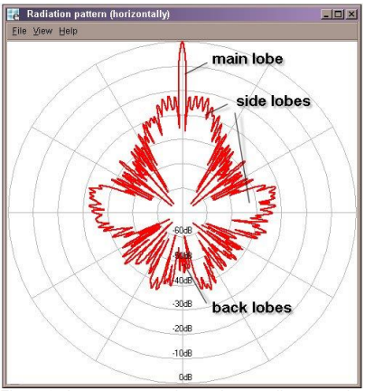
主波束（main beam）或主瓣（main lobe），是最大辐射方向周围的区域（通常是在主波束峰值3 dB以内的区域），图中的主瓣向北。
旁瓣（sidelobes）是远离主波束的较小波束。这些旁瓣通常是在不希望的方向上的辐射，永远无法完全消除。副瓣电平是表征辐射模式的一个重要参数。
其中一个副瓣称为后瓣（backlobe）。这是辐射方向与主光束方向相反的部分。
下图中的图形显示了同一源的矩形坐标图。在直角坐标图中，点是通过一对固定的垂直轴的投影来定位的。矩形坐标图上的水平轴对应于极坐标图中的圆。矩形坐标图上的垂直轴对应于极坐标图中的旋转轴（半径）。图表中的测量刻度可以是线性的，也可以是对数的。

根据绘制的天线方向图，可以测量天线的一些重要特性：
前后比（front-to-back ratio），定向天线前后之间的功率增益比（图中180度的副瓣值：34dB）。
旁瓣比（side lobe ratio），即远离主波束的旁瓣的最大值。（在图中，副瓣的值，例如+6度：20dB）。
Beam Width
仍发射至少一半最大功率的天线方向图的角范围称为“波束”（beam with）。因此，该主瓣的边界点是室内场强相对于最大场强下降约3 dB的点。然后，该角度被描述为波束宽度（beam width），孔径角（aperture angle）或半功率（-3 dB）角，并带有符号$\Theta$（也称为$\varphi$）。波束宽度$\Theta$正好是图中两个黑色标记功率电平之间的角度。角度$\Theta$可以在水平面（用符号$\Theta_{AZ}$）和垂直面（用标记$\Theta_{EL}$）中确定。
Aperture
各向同性辐射器在球体表面分散所有能量。功率在给定距离内具有规定的密度。定向天线将能量集中在较小的区域，功率密度高于各向同性散热器。密度也可以表示为单位面积的功率。接收到的功率与相关面积成比例，该区域称为有效孔径（effective aperture）。
天线的有效孔径$A_e$是辐射或接收信号的面积，是控制天线性能的关键参数，天线增益与有效面积的关系如下：
$\lambda$ = wavelength
$A_e$ = effective antenna aperyure
$A$ = physical area of the antenna
$K_a$ = antenna aperture efficency
Major and Minor Lobes
上图所示的辐射集中在几个瓣。一个瓣的辐射强度比另一个叶瓣得多。最强的叶称为主瓣；其他是（小）旁瓣。由于与阵列相关的复杂辐射模式通常包含几个强度不同的波瓣。一般来说，主瓣是辐射量最大的瓣。侧瓣或小瓣是辐射强度最小的瓣。
Front-to-back Ratio
前后比是定向天线前后之间的功率增益比。在大多数情况下，天线模式图中有一个独特的后瓣。有时你找不到一个与主瓣正好相反的波瓣，在这种情况下，前后比是指主瓣相反方向±10至±30度范围内的最大旁瓣。需要较高的前后比是为了在不需要的方向上辐射的能量最小。
Polarization
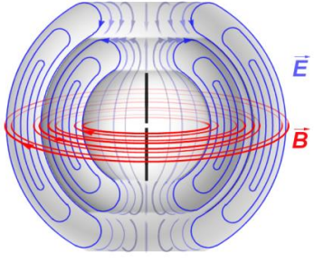
天线的辐射场由电力线和磁力线组成。这些力线总是彼此成直角。这个
电场决定波的极化方向。当使用单线天线从经过的无线电波中提取能量时，当天线朝向与电场相同的方向时，将产生最大的提取效果。
电场的振荡可以是单向的（线性极化），或者电场的振荡方向可以随着波的传播而旋转（圆极化或椭圆极化）。
Linear Polarization
垂直和水平安装的接收天线分别用于接收垂直和水平极化波。因此，由于天线无法接收极化变化，极化变化会导致接收信号电平的变化。主要使用两个极化平面：
在垂直极化波中，电力线位于垂直方向。
在水平极化波中，电力线位于水平方向。
线性极化显然可以取所有平面，但除了水平面和垂直面之外。当使用单线天线从经过的无线电波中提取能量时，当天线朝向与电场相同的方向时，将产生最大的拾提取效果。因此，垂直天线用于有效接收垂直极化波，水平天线用于接收水平极化波。
Circular Polarization
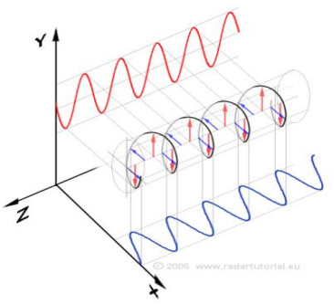
圆极化使电力线在每一个射频能量循环中旋转360度。圆极化由两个90°相移输入信号和同时移动90°的平面极化天线产生。选择电场作为参考场，因为波的强度通常是根据电场强度（伏特、毫伏或微伏/米）来测量的。在某些情况下，电场的方向并不保持不变。相反，磁场随着波在空间中传播而旋转。在这些条件下，场的水平分量和垂直分量都存在，波的极化为椭圆。
圆极化可以是右手极化，也可以是左手极化。圆极化波被球形雨滴反射，透射方向相反。在接收时，天线会抑制圆极化方向相反的波，从而最大限度地减少对雨水的探测。目标的反射在原始偏振意义上具有重要成分，因为与雨不同，飞机不是球形的。因此，相对于雨水，目标信号的强度增强。
为了最大限度地吸收电磁场的能量，接收天线必须位于同一极化平面。如果使用了错误极化的天线，则会产生相当大的损耗，实际上在20到30 dB之间。
Half-wave Antenna
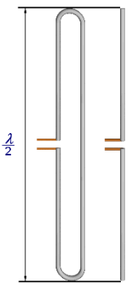
半波天线（称为偶极子、赫兹或偶极子）由两段线材或管子组成，每根线材或导管在特定频率下的波长为1/4。它是构造许多复杂天线的基本单元。对于偶极子，电流在中心最大，在末端最小。电压在中心最小，在端部最大。
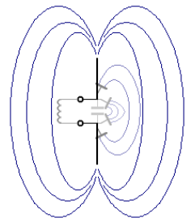
能量也可以通过将天线在其中心分开，并将传输线从最终发射机输出级连接到对半天线的两个中心端，馈送到半波天线。由于天线现在是在中心馈电（低电压和高电流点），这种馈电类型称为中心馈电或电流馈电方法。馈电点在确定要使用的传输线类型时非常重要。
电流和电压的驻波类似于并联振荡电路。然而，与增益精确为1的各向同性辐射器相反，半波天线的增益约为1.5，而最大辐射来自于垂直于天线轴的方向。
半波偶极子来自一个简单的振荡电路。假设振荡电路的电容板分开稍微弯曲，现在容量减少了，但电容器仍然是一个电容器。当电容板进一步分开时，电场的力线必须覆盖越来越大的范围。电容器的形状已无法识别。电场的力线穿过自由空间。出现了一个半波偶极子，现在正在中心馈电。
Parabolic Antennae
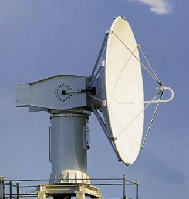
抛物面碟形天线是雷达工程中最常用的安装天线类型，上图显示了抛物面天线。碟形天线由一个圆形抛物面反射器和一个位于该反射器焦点上的点源组成。该点源称为“主馈电”或“馈电”。
圆形抛物面（抛物面）反射器由金属制成，通常是一个内部由金属网覆盖的框架。金属网槽的宽度必须小于λ/10。该金属覆盖物形成反射器，用作雷达能量的镜子。
根据光学定律和分析几何学，对于这种类型的反射器，所有反射光线都将平行于抛物面的轴，理想情况下，抛物面会有一条反射光线平行于主轴，没有旁瓣。该场使馈电喇叭具有球形波前。当波前的每一部分到达反射面时，它的相位会偏移180度，并以一定角度向外发送，从而使场的所有部分以平行路径传播。
这是一个理想化的雷达天线，可以产生铅笔波束。如果反射器为椭圆形，则会产生扇形光束。监视雷达在水平面和垂直面上使用两种不同的曲率，以实现所需的方位角铅笔波束和仰角经典余割平方扇形波束。
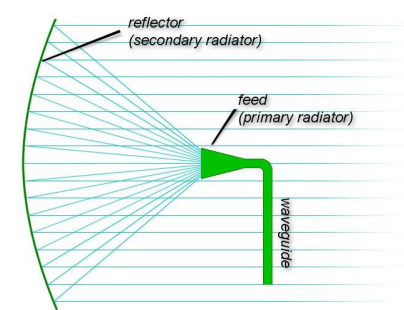
上图所示的这种理想情况在实践中并不发生。由于生产中的不规则性，实际抛物面天线方向图呈锥形。该主瓣的角宽度可能会有所不同，从某些雷达装置的1到2度到其他雷达的15到20度不等。抛物面天线的辐射方向图包含一个沿传播轴定向的主瓣和几个小的副瓣，这种类型的反射器可以产生非常窄的光束。
抛物面反射器天线的增益G可以确定如下：
$\Theta_{AZ}$ = beamwidth in azimuth angle
$\Theta_{El}$ = beamwidth in elevation angle
Fan-Beam Antenna
具有抛物面反射器的天线的增益G可以确定如下：扇形波束天线是一种定向天线，它产生一个在一个维度上具有窄波束宽度，在另一个维度具有更宽波束宽度的主波束。这种图案可以通过照亮抛物面的不对称部分获得，例如通过截断抛物面反射器。由于反射器在垂直面上较窄，在水平面上较宽，因此它产生的光束在垂直面内较宽，而在水平面内较窄。
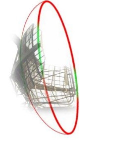
这种类型的天线系统通常用于测高设备（如果反射器旋转90度）。由于反射器在水平面上较窄，在垂直面上较宽，因此它产生的光束在水平面内较宽，而在垂直面内较窄。在形状上，测高雷达的波束是一个水平扇形波束图，如图所示。角馈天线不安装在天线的中间，而是更侧向，类似于商业卫星接收器的碟形天线，这种馈电称为偏置天线。
Offset Antenna
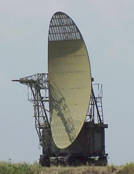
与馈电喇叭相关的一个问题是，如果馈电喇叭位于波束路径中，则会产生阴影。阴影是馈电喇叭正前方的一个死点。通常，馈电喇叭会阻碍抛物面天线上来自反射器的射线。为了解决这个问题，馈电喇叭可以从中心偏移。在偏移馈线中，馈线位于波的路径之外，因此不会因孔径阻塞而导致图案恶化。喇叭相对于抛物线的轴朝上，抛物线的下半部被移除。净效应是抛物线较浅，焦距较大。因此，馈电喇叭距离反射器更远，需要更大的方向性，以避免能量溢出。因此，这种设计需要更大的喇叭，而且通常建造起来更困难、更昂贵。
Phased Array Antenna
Principle of Operation
相控阵天线由许多辐射元件组成，每个辐射元件带有一个移相器。波束是通过改变每个辐射元件发出的信号的相位形成的，以提供constructive/destructive interference，从而将波束转向所需的方向。
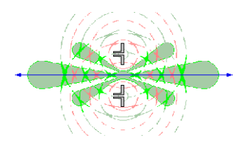
在图中，两个辐射元件都是用同一相位馈电的。信号通过主方向上的constructive interference而放大。破坏性干涉提高了光束锐度。
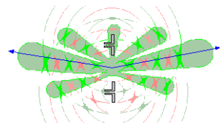
在图中，信号由下部辐射元件发射，相移比上部辐射元件早10度。因此，发射和信号的主方向向上移动。（注：图中使用的辐射元件没有反射器。因此，所示天线图的后瓣与主瓣一样大。）
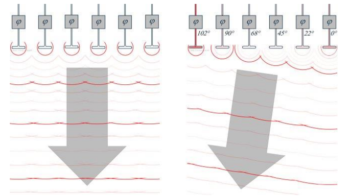
主波束总是指向相移增加的方向。如果要辐射的信号现在通过电子移相器传递，从而产生连续的相移，那么波束方向将是电子可调的。然而，这不能无限扩展。相控阵天线的视野（FOV）可以达到的最高值为120°（左60°和右60°）。利用正弦定理，可以计算出必要的相位移动。
Linear Array
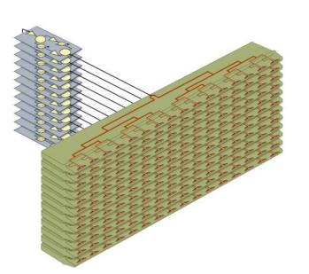
这些天线由线组成，这些线的元件围绕一个公共移相器转动。若干相互垂直安装的线性阵列构成一个平面天线。
Planar Array
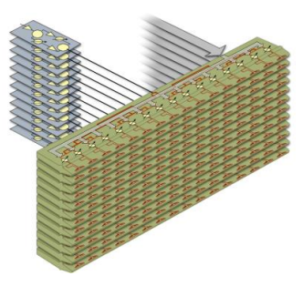
这些天线阵列完全由单个辐射单元组成，每个单元都有自己的计算机控制移相器。元素在矩阵数组中排序。所有元件的平面布置构成完整的相控阵天线。
优点：可以在两个平面上进行光线偏转
缺点：布置复杂，需要更多的电子控制移相器
安排波束偏转的处理器需要较高的处理能力。移相器通常通过串行总线系统进行控制。每个辐射元件一个附加的受控衰减器可以组成各种波束形状。如果雷达装置安装在移动平台上，处理器还必须考虑波束偏转，计算平台的俯仰和横摇。
Frequency Scanning Array
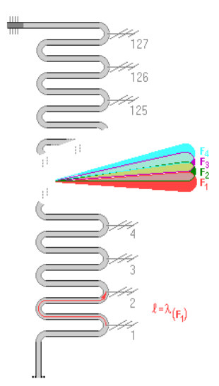
频率扫描是相控阵天线的一种特殊情况，其中通过激励的频率扫描实现主波束转向，波束转向是传输频率的函数，这种天线称为频率扫描阵列。通常的安排是从一个折叠波导馈送不同的辐射元件。频率扫描阵列是相控阵天线串行馈电类型的特例，它基于波导中波传播的特殊特性。正常频率下，两个辐射元件之间的相位差为n·360°。
通过改变频率，改变主波束轴线与阵列天线法线之间的角度$\Theta_{S}$。使用以下原理生成高度信息：
如果发射频率上升，则波束沿天线表面传播；
如果发射频率下降，则波束沿天线表面向下传播。
随着频率的变化，波束轴将改变，扫描可以在仰角完成。雷达装置的设计使其能够在频率传输时跟踪频率，然后检测并将返回的频率转换为3D显示数据。请注意，频率扫描降低了使用频率变化作为实现其他有价值效果的手段的价值（脉冲压缩的好处）。
Phase Shifter
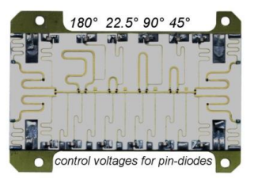
移相器切换不同的迂回线路比调节器更快。图中显示了雷达装置中使用的4位开关移相器。不同的绕行线路被切换到信号道。因此，在0°和337.5°之间以22.5°的距离步进创建了16个不同的相位角。
电感（作为低通滤波器的细弯曲导线）也可以在总共24针二极管的开关电压电源中识别。
由于该移相器模块既适用于传输方式，也适用于接收方式，因此这两条路径之间的分支与模块入口和出口处陶瓷带上的引脚二极管开关相连。
接收时间和发送时刻必须使用相同的数据字。很容易理解：这一个散热器，发射最新的相移，首先接收回波信号。它的移相器必须有最大的绕行线，以便在确定的方向上形成图形。接收能量和视频脉冲的总和需要相同的绕行线。
移相器将微波信号通过不同长度的电缆传输给每个辐射元件。电缆延迟波，从而改变输出的相对相位。图中显示了每个移相器可以引入的三个基本延迟。这些开关是快速引脚二极管开关。中央计算机计算移相器路径适当组合中每个辐射元件和开关的适当相位延迟。
Monopulse Antennae
在这个概念下，天线组合成一个天线阵列，在馈电中有一种特殊的方法：单个天线元件并不总是在一起同相切换！对于不同的目的，接收到的能量可以形成各种总和和差值。
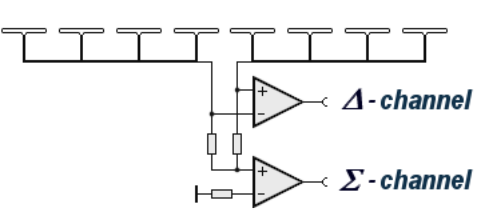
在使用单脉冲天线的主雷达装置中，所有天线元件都是同相馈电的，并总结了辐射方向图。某些组仅在接收时间中进行汇总，其总和或差异为自己的接收频道提供信息。然后将所有信号作为视频处理器功能进行比较，并使用它们的差异更准确地估计目标的方位。因此，它可以以更低的每次扫描命中率运行。
在使用单脉冲天线的二次雷达装置中，脉冲组在和信道上传输，在差信道上传输额外的脉冲。单脉冲天线用于旁瓣抑制。这两个例子说明：单脉冲天线不是一个自己的基本天线模型。单脉冲天线可以构造为一组对数周期天线、一组简单的偶极辐射器或贴片天线场。